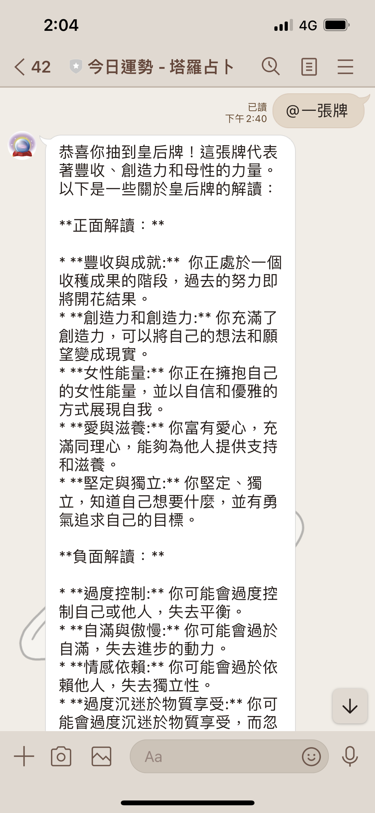

LINE官方帳號結合Gemini塔羅牌占卜
說明
創建LINE官方帳號利用Python程式碼結合Google Gemini API來達成每日運勢的占卜頻道。
今日運勢 成果

Updated at September-2-2024
事前準備
- 建立一個 LINE官方帳號，完成基本設定並加入LINE好友
- 申請一組 Google Gemini API
- 下載 ngrok，使用token建立Webhook URL，與LINE官方帳號連結成功
Python 程式
步驟一、Python環境配置
請確定Python版本為3.10以上，並完成安裝下列套件。
pip install flask
pip install line-bot-sdk
pip install google-generativeai
pip install Pillow
步驟二、引入必要的函式庫
import os
import random
from flask import Flask, request, abort
from linebot import LineBotApi, WebhookHandler
from linebot.exceptions import InvalidSignatureError
from linebot.models import MessageEvent, TextMessage, ImageMessage, AudioMessage, VideoMessage,
TextSendMessage
from PIL import Image
import io
import google.generativeai as genai
步驟三、設定Google Gemini
填入Gemini API，並確保Gemini模型為gemini-1.5-flash穩定版。
# 設定Gemini API 密鑰
api_key = "API 密鑰"
genai.configure(api_key=api_key)
#連接GEMINI模型
model = genai.GenerativeModel('gemini-1.5-flash')
步驟四、建立LINE BOT連線環境
填入LINE開發平台 token key與LINE開發平台 secret key
# 設定 LINE BOT 的 Channel Secret 和 Channel Access Token
line_bot_api = LineBotApi('LINE開發平台 token key')
handler = WebhookHandler('LINE開發平台 secret key')
app = Flask(__name__)
# LINE BOT的 Webhook 路由
@app.route("/callback", methods=['POST'])
def callback():
# 確認請求來自LINE伺服器
signature = request.headers['X-Line-Signature']
body = request.get_data(as_text=True)
try:
handler.handle(body, signature)
except InvalidSignatureError:
abort(400)
return 'OK'
if __name__ == "__main__":
port = int(os.environ.get('PORT', 5000))
app.run(host='0.0.0.0', port=port, debug=True)
步驟五、建立Line-BOT事件處理框架
建立塔羅牌列表，並建立今日運勢解釋的prompt給Gemini。
# 定義塔羅牌列表
tarot_cards = [
"愚人", "魔術師", "女祭司", "皇后", "皇帝", "教皇", "戀人", "戰車",
"力量", "隱士", "命運之輪", "正義", "倒吊者", "節制", "惡魔", "塔",
"星星", "月亮", "太陽", "審判", "世界", "死神"
]
# 處理來自 LINE 的文字消息
@handler.add(MessageEvent, message=TextMessage)
def handle_message(event):
user_message = event.message.text
if user_message == '@一張牌':
# 隨機選擇一張塔羅牌
selected_card = random.choice(tarot_cards)
prompt = f"請解釋塔羅牌今日運勢的牌義：{selected_card}"
else:
prompt = user_message
try:
# 使用 Google Generative AI 生成回應
response = model.generate_content(prompt)
reply_text = response.text
except Exception as e:
reply_text = f"抱歉，生成內容時發生錯誤：{str(e)}"
# 回覆用戶的消息
try:
line_bot_api.reply_message(
event.reply_token,
TextSendMessage(text=reply_text)
)
except Exception as e:
app.logger.error(f"Error replying message: {str(e)}")